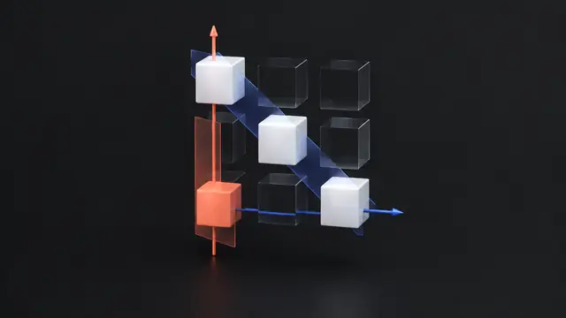
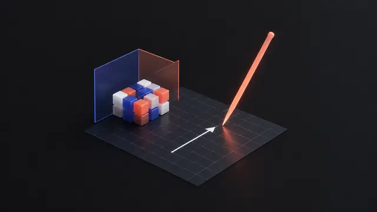

How a computer solves Ax = b: subtract rows until the system is a triangle, solve from the bottom up, and record the steps as A = LU. 6 short slides, then worked examples and problems. Each slide has an everyday picture, a worked example and Python you can run right on the page.
How elimination solves two equations: subtract to remove an unknown, then back-substitute. A café puzzle, a worked example and live Python. Strang §2.2.
Lesson 2PivotsPivots clear the columns. Back substitution climbs back up.Open slide →02 · Strang §2.2 · PivotsClear one column at a time with the pivots, reach an upper triangular U, then solve from the bottom up. Worked 3×3 example with Python. Strang §2.2.
Lesson 2Zero pivotsA zero pivot: swap rows, or stop.Open slide →03 · Strang §2.2 · Breakdown of eliminationA zero pivot means swap rows or stop. See the three cases in the row picture: one solution, no solution, infinitely many. Strang §2.2.

Lesson 2Elimination matricesEach elimination step is a matrix.Open slide →04 · Strang §2.3 · Elimination using matricesEvery elimination step is a matrix E. Multiplying by E subtracts a multiple of one row from another. Build E21 and E31 in Python. Strang §2.3.
Lesson 2A = LUA = LU: the triangle U and the receipt L.Open slide →05 · Strang §2.6 · Elimination = factorizationElimination turns A into U, and the multipliers fill a lower triangular L so that A = LU. Factor once, solve many times. Python example. Strang §2.6.
Lesson 2RecapWhat you can now do.Open slide →06 · Recap · ReadingElimination in one page: multipliers and pivots, back substitution, zero pivots and row exchanges, elimination matrices, and the factorization A = LU.

Lesson 2PracticeWorked examples and problems with hidden solutions.Practise →✎ · PracticeWorked examples and practice problems with hidden solutions: 2×2 and 3×3 elimination, pivots, zero pivots, elimination matrices and A = LU.